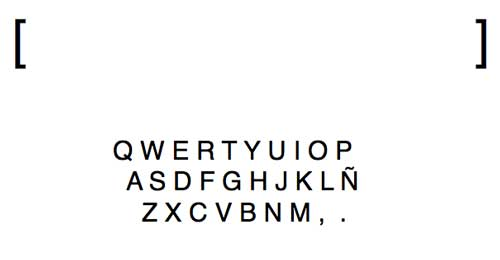

QWERTY
QWERTY
¿Cuántas palabras caben en una máquina de coser y cuántos hilos caben en una máquina de escribir? ¿cuántos hilos se hacen con la palabra?
QWERTY es una pieza en construcción. Todo inició por la lucha entre la necesidad y la imposibilidad de pronunciarnos. La palabra es para nosotrxs un cuerpo que da soporte y fundamento. Nuestras palabras, aquello que enunciamos, no sólo son aire lleno de signos, es cuerpo en potencia en tanto que está cargado de una profunda necesidad de manifestación. Y ésta sólo es posible con lxs otrxs, siempre buscamos a otrxs, hacernos con ellxs, manifestarnos con ellxs, fisurar el dogma del pensamiento “profesionalizado” para hacer otros pensamientos desde el cuerpo y la memoria. También, es probable que existan recuerdos recónditos de otros seres, los que fuimos hace años, que lograban levantar la voz para manifestar sus pensamientos y hacer realidad sus deseos colectivos. Tenemos tres cuerpos y dos máquinas: una escribe y otra zurce. Los cuatro, tienen su memoria; en su acción, la posibilidad de nombrar o zurcir los recuerdos… solo necesitamos un espacio en blanco.
Género: Pieza performance.
Idea y concepción: Laura Loredo, Daniela Guillén
y Daniel Goel.